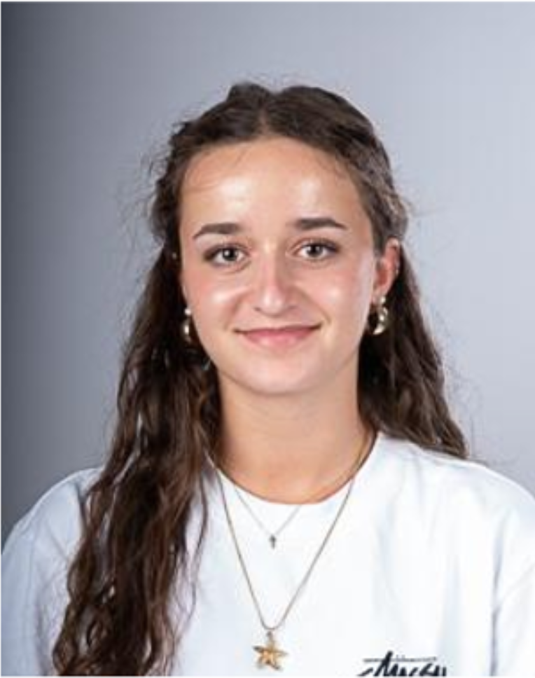
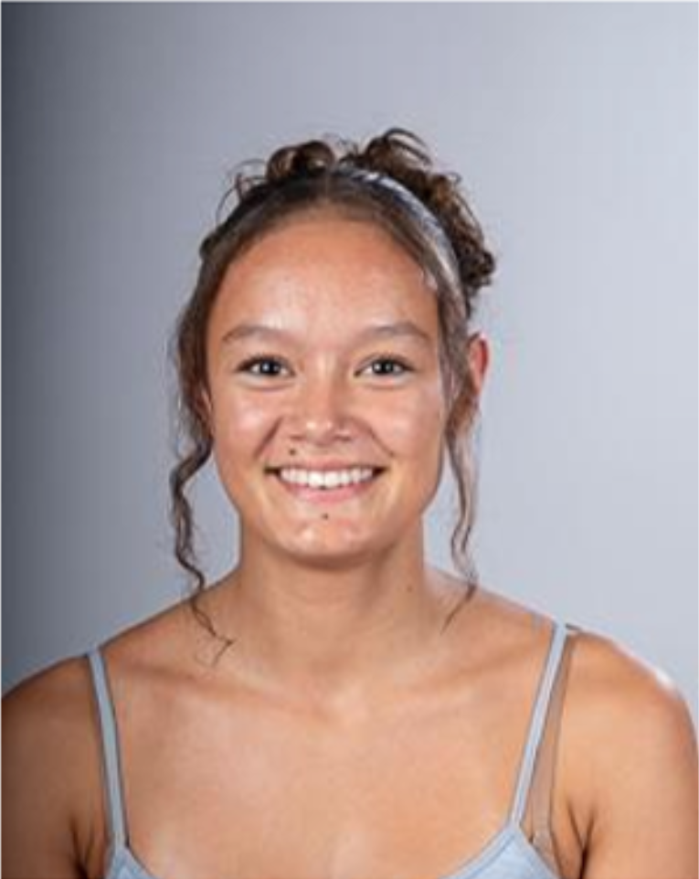

DIE GESICHTER HINTER DER MATE
Wir lieben den Kick von frisch aufgebrühtem Mate.
Willkommen auf unserer El Tony Fanpage! Wir sind ein Team aus zwei leidenschaftlichen Entwicklerinnen, die es sich zum Ziel gesetzt haben, die erfrischendste Mate der Schweiz digital in Szene zu setzen. Hier erfährst du mehr über uns und wie du uns erreichen kannst.

Sarina Bachmann
Creative Director
Zuständig für das Design und die El Tony Visuals.

Ria Ottiger
Lead Developer
Expertin für sauberen Code und die technische Umsetzung.
WO IHR UNS FINDET
Hauptquartier
Kottenmatte 4, 6210 Sursee
Support-Zeiten
Montag - Freitag: 09:00 - 17:00 Uhr